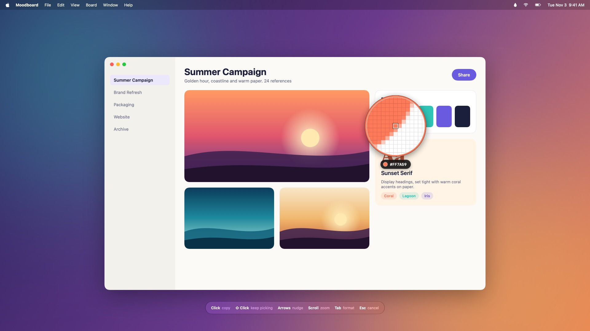
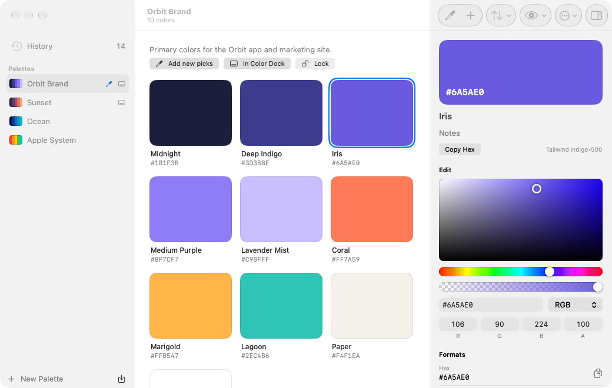
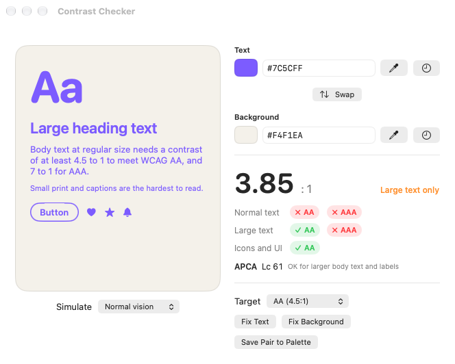
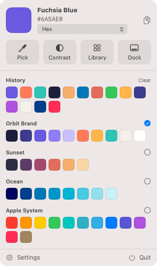
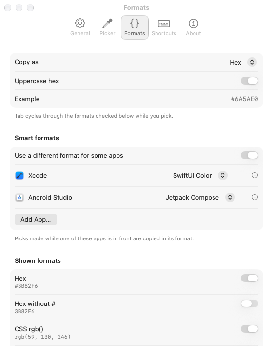

Pick any color on your screen.Free and open source.
Press ⌃⌥⌘P, click a pixel, and paste it as hex, CSS, SwiftUI, Tailwind or Compose. Keep palettes, check contrast, and see how your colors look to everyone.
macOS 26 or later · Apple silicon and Intel · Signed and notarized

Try the loupe
Move over the picture and click to pick. The app does the same with the real pixels on any screen, then copies the value in your format.
Scroll to zoom, arrow keys to nudge, click to copy. Picks land in the history on the right.
Everything a color picker should do
Chroma lives in your menu bar. It freezes the screen for a moment while you pick, so it works on anything: apps, websites, design files, photos and video.
A loupe that's exact
See every pixel under the pointer up close. Nudge with the arrow keys, zoom with the scroll wheel, or average a 3×3 square.
35 formats, plus yours
Hex, CSS rgb, hsl and oklch, Display P3, Tailwind, SwiftUI, UIColor, NSColor, Compose, Flutter, Android XML and more. Write your own with a template.
Smart formats
Pick in Xcode and get SwiftUI; pick in Android Studio and get Compose. Set a format for any app. Tab switches while you pick.
History and palettes
Every pick is saved. Organize colors into palettes by dragging, name them, add notes, sort by hue or lightness, lock the finished ones.
Color Dock
Your palettes in a slim glass strip at the edge of the screen. Click a color to copy it, or drag it straight into Figma, Keynote or your code.
Contrast checker
WCAG 2 ratios for text and UI, plus APCA. One click finds the nearest text or background color that passes AA or AAA.
Color blindness preview
See any palette with protanopia, deuteranopia, tritanopia or achromatopsia, and catch colors that blur together.
Edit, harmonize, scale
Edit in RGB, HSB, HSL or OKLCH. Get complementary, triadic and analogous colors, and a full 50–950 scale from any color.
Import and export
Adobe .ase, Apple .clr, GIMP .gpl, Sketch palettes and JSON in; CSS, SCSS, Tailwind, SwiftUI, Android XML and PNG out. Paste any text full of color codes.
Sync your way
Your library is a plain JSON file. Keep it in iCloud Drive or Dropbox and every Mac stays in step, with no account.
Shortcuts and automation
Global shortcuts you can change, Shortcuts app actions, and a chroma:// URL scheme for scripts and launchers.
Private
No account, analytics or network access. The screen image is discarded the moment you pick or press Esc.
A closer look




{r} and {hex}.Every format, live
Type a color in any notation, or pick one. These are the same templates the app uses.
Shortcuts
The same defaults as Sip, so muscle memory carries over. Change any of them in Settings.
| ⌃⌥⌘P | Pick a color, from any app |
| ⌃⌥⌘O | Contrast checker |
| ⌃⌥⌘C | Library |
| ⌃⌥⌘D | Show or hide the Color Dock |
| Click ↩ | Pick and copy |
| ⇧ Click | Pick and keep picking |
| ← → ↑ ↓ | Move one pixel (⇧ for 10) |
| Scroll ⌥+ ⌥− | Magnification |
| + − | Loupe size |
| Tab | Next format |
| G S | Pixel grid, sample size |
| Esc | Cancel |
Questions
Why does it need Screen Recording permission?
To read a color, Chroma has to see the pixels on screen. Each time you pick it takes one still image per display, reads it while the loupe is up, and discards it when you click or press Esc. Nothing is saved or sent anywhere.
Is it free?
Yes. It's open source under the MIT License, with no trial, subscription or account.
How does it compare to Sip?
Sip inspired it and is a great app. Chroma covers the same workflow (a loupe picker, history and palettes, a Color Dock, a contrast checker, color blindness previews, dozens of formats and per-app formats) and adds APCA scores, OKLCH editing, Tailwind matching, tints and harmonies, and folder-based sync. It's free to use and modify.
Which color space does it use?
Values are sRGB, which is what CSS hex, rgb() and most code expect. The color(display-p3 …) and oklch() formats convert from there.
How do I sync palettes between Macs?
In Settings → General, choose a library folder in iCloud Drive, Dropbox or any synced folder. Chroma keeps a single Library.json there and reloads it when another Mac changes it.
Can I script it?
Yes. The Shortcuts app has Pick Color, Get Last Picked Color, Convert Color and Add Color to Palette actions. You can also open URLs like chroma://pick, chroma://contrast?text=%23333&background=%23fff or chroma://add?color=%23ff7a59&palette=Brand.
Which Macs does it support?
macOS 26 or later, on Apple silicon and Intel. It's signed with a Developer ID and notarized by Apple, so it opens without warnings.
How do I build it?
Clone the repository, run brew install xcodegen and xcodegen generate, then open Chroma.xcodeproj in Xcode 26 or later.